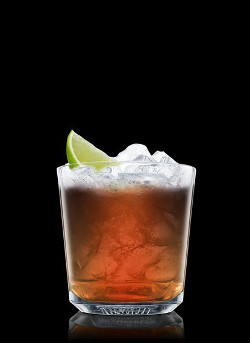
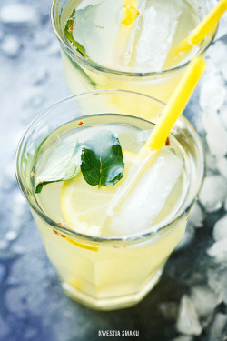
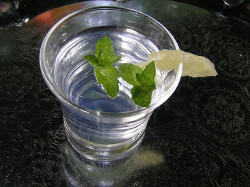

Składniki:
1 ½ Porcje Irlandzka whiskey
Cola
1 Cząstka Limonka
Napełnij szklankę typu whisky lodem. Dodaj irlandzką whiskey. Dopełnij colą. Dekoruj limonką.

SKŁADNIKI
4 PORCJE
2 pomarańcze
2 cytryny
1 limonka lub dodatkowa cytryna
4 łyżki cukru
6 nasion kardamonu
gałązka mięty
1 litr zimnej wody
kilka kostek lodu
Pomarańcze, cytryny i limonkę dokładnie umyć. 1 pomarańczę i 1 cytrynę pokroić na półplasterki, włożyć do dzbanka, zasypać cukrem i wymieszać. Wstawić do lodówki.
Nasiona kardamonu delikatnie rozgnieść i wyłuskać owoce, włożyć na rozgrzaną małą patelnię i podgrzewać przez około 1 minutę aż uwolnią swój aromat. Dodać do dzbanka z cytrusami, włożyć gałązkę mięty i wymieszać. Wstawić do lodówki na minimum godzinę (można dłużej), od czasu do czasu można zamieszać i ugnieść końcem łyżki.
Wlać zimną wodę do dzbanka, dodać sok wyciśnięty z drugiej pomarańczy, sok z cytryny i limonki i dokładnie wymieszać długą łyżką. Przed podaniem dodać kostki lodu.

Składniki
100 ml ginu
100 ml toniku
Cytrynka i mieta do dekoracji
Wymieszac wszystkie płyny i udekorować cytryna i mięta.